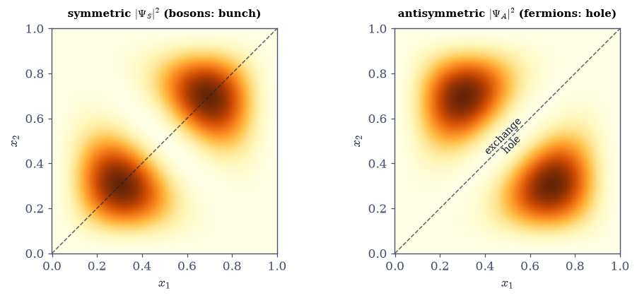
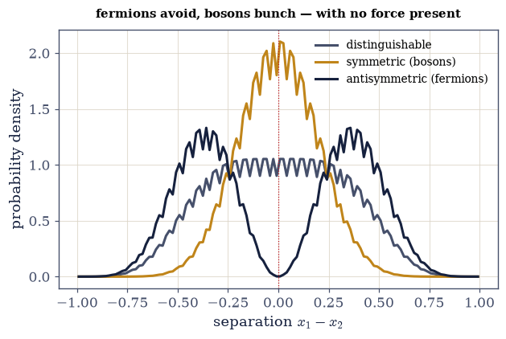
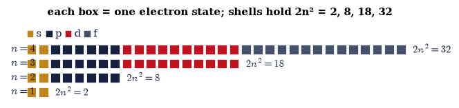

6.20 Identical Particles, Exchange Symmetry, and the Pauli Principle#
Notebook overview#
This is the notebook that explains why matter has the structure it does — the deepest “why is the world this way” question the volume answers — and it grows from a single, almost trivial-sounding fact: two electrons are not merely similar, they are identical. There is no measurement, even in principle, that can tell one electron from another; they carry no labels. Classically we could still track them (“particle 1 started here, particle 2 there”), but quantum-mechanically we cannot, and quantum mechanics enforces this indistinguishability with a postulate that turns out to build the periodic table.
The last notebook glimpsed the seed: two spin-\(\tfrac12\)’s combined into a symmetric triplet and an antisymmetric singlet. Here that exchange symmetry is elevated from a feature of coupled states into a law. Because swapping two identical particles can change nothing observable, the state must be an eigenstate of the exchange operator, and there are only two possibilities: totally symmetric or totally antisymmetric. Nature uses both — particles of integer spin are bosons (symmetric), particles of half-integer spin are fermions (antisymmetric), the spin–statistics connection — and electrons, being spin-\(\tfrac12\), are fermions.
Three consequences follow, and we compute each. First, the exchange hole: the antisymmetric state vanishes when two fermions coincide (and when they would occupy the same state), while the symmetric state is enhanced there — a purely quantum correlation with no force behind it. Second, and genuinely new, the exchange interaction: even with a Hamiltonian carrying no spin-dependent force, symmetric and antisymmetric spatial states have different average separations and hence different interaction energies — and because an electron pair’s overall state must be antisymmetric, the spatial symmetry is locked to the spin state (symmetric-spatial ↔ singlet, antisymmetric-spatial ↔ triplet, §6.19). So the energy depends on spin though the Hamiltonian does not: this is the origin of Hund’s rule, ferromagnetism, and the covalent bond — magnetism that is electrostatic in origin, filtered through exchange symmetry. Third, the Slater determinant packages antisymmetry into one object that vanishes automatically if two orbitals coincide — the Pauli exclusion principle — which forces electrons into successive shells, giving the periodic table, the size and rigidity of matter, and the degeneracy pressure that holds up white dwarfs.
As in every Volume VI notebook, each exercise opens with a crystal-clear statement and enumerated parts, each naming the exact operation — the two-particle states via numpy.outer of single-particle
box orbitals (§6.10), numpy.linalg.det for the Slater determinant, and 2-D numpy.trapezoid sums for
\(\langle(x_1-x_2)^2\rangle\) and \(\langle V_{\text{int}}\rangle\).
Scope and conventions. Single-particle states are the box eigenstates of §6.10 (\(\varphi_n(x)= \sqrt{2/L}\sin(n\pi x/L)\) on \([0,L]\), \(L=1\)). Two-particle wavefunctions are spatial only; the spin state is implied by the requirement that the overall fermion state be antisymmetric. This notebook establishes the microscopic rule (symmetrization, the exchange interaction, Slater/Pauli) and its consequences for the structure of matter (the periodic table, bonding, magnetism, stellar stability). It does not compute the quantum statistics — the Fermi–Dirac and Bose–Einstein distributions, quantum gases, blackbody radiation, Bose–Einstein condensation — which are the thermodynamics built on this rule, deferred to Volume VII. Indistinguishability is why quantum particles are counted differently from classical ones (the \(1/N!\) and the correlations that Volume V’s counting, §5.1, could only anticipate); here is the microscopic foundation, and Volume VII builds the statistics on it. See Sakurai & Napolitano and Griffiths (identical particles, exchange, Slater determinants); and Notebooks §6.19 (singlet/triplet), §6.8 (entanglement), §6.17/§6.18 (the \(2n^2\) states), §6.10 (the box orbitals), §5.1 (counting).
Theory in brief#
Indistinguishability and the two allowed symmetries#
Exchanging two identical particles must leave every observable unchanged, so the exchange operator \(P_{12}\) (swap the particles) commutes with \(H\) and every observable; since \(P_{12}^2=I\), its eigenvalues are \(\pm1\), and physical states must be eigenstates:
The symmetrization postulate and spin–statistics#
Which sign a given species uses is not decided by Eq. 493: nothing in non-relativistic quantum mechanics ties the exchange eigenvalue to any other property of the particle. Nature nevertheless makes a universal choice, taken here as a postulate:
the spin–statistics connection — a theorem of relativistic quantum field theory (named here as a horizon, not proved). Electrons, protons, neutrons are fermions; photons and many nuclei are bosons.
Two-particle states and the exchange hole#
From single-particle states \(\varphi_a,\varphi_b\),
with \(+\) symmetric (bosons) and \(-\) antisymmetric (fermions). \(\Psi_A\) vanishes when \(x_1=x_2\) (and when \(a=b\)): fermions cannot coincide or share a state — the exchange hole. \(\Psi_S\) is enhanced there: bosons bunch. This is a correlation with no force behind it.
The exchange interaction#
Even with a spin-independent \(H\), the average separation differs (Griffiths computes the three expectation values in full):
so with a repulsion \(V(x_1,x_2)\) the antisymmetric state (particles farther) has lower energy. For electrons the overall state is antisymmetric, tying spatial symmetry to spin (symmetric-spatial ↔ singlet, antisymmetric-spatial ↔ triplet, §6.19), so the energy depends on spin though \(H\) does not — the exchange interaction, the origin of Hund’s rule, ferromagnetism, and the covalent bond. Magnetism is electrostatic repulsion filtered through exchange symmetry.
The Slater determinant and Pauli exclusion#
Antisymmetrizing \(N\) particles by hand means summing the \(N!\) permutations of the product \(\varphi_1\cdots\varphi_N\) with alternating signs: precisely the expansion of a determinant. The \(N\)-fermion generalization of Eq. 495 is therefore
automatically antisymmetric (swap two particles → swap two columns → sign flip), and zero if two orbitals coincide (two equal rows) — the Pauli exclusion principle: no two identical fermions in the same single-particle state.
The architecture of matter#
We now aim the exclusion principle at the atom. The one-electron states of §6.17 carry the labels \((n,l,m_l)\), spin (§6.18) doubles them with \(m_s\), and Pauli admits at most one electron per label, so
the periodic table. Exclusion also gives matter its size and rigidity (a degeneracy pressure — electrons cannot all fall to the ground state) and holds up white dwarfs and neutron stars. And indistinguishability is why quantum particles are counted differently from classical ones (§5.1) — the microscopic foundation on which Volume VII’s quantum statistics is built.
Setup#
import matplotlib.pyplot as plt
import numpy as np
from ecp import draw, validate
ACCENT, INK, SOFT = draw.ACCENT, draw.INK, draw.SOFT
RED, BLUE = "#c1121f", "#1d4e89"
# the single-particle box: [0, L], with the §6.10 box eigenstates φ_n(x) = √(2/L) sin(nπx/L)
L = 1.0
N_GRID = 400
x = np.linspace(0, L, N_GRID)
X1, X2 = np.meshgrid(x, x, indexing="ij")
def box_orbital(n):
"""The n-th particle-in-a-box eigenstate φ_n(x)=√(2/L) sin(nπx/L) (the §6.10 box states), normalized."""
f = np.sqrt(2 / L) * np.sin(n * np.pi * x / L)
return f / np.sqrt(np.trapezoid(f**2, x))
def two_particle_state(phi_a, phi_b, symmetry):
r"""Build a normalized two-particle state on the $(x_1,x_2)$ grid via ``numpy.outer`` {eq}`eq-two-particle`.
``symmetry='S'`` gives the symmetric $\Psi_S$ (bosons), ``'A'`` the antisymmetric $\Psi_A$ (fermions),
``'D'`` the distinguishable product $\varphi_a(x_1)\varphi_b(x_2)$ (the classical reference).
"""
prod_ab = np.outer(phi_a, phi_b) # φ_a(x1) φ_b(x2)
prod_ba = np.outer(phi_b, phi_a) # φ_b(x1) φ_a(x2)
if symmetry == "S":
psi = (prod_ab + prod_ba) / np.sqrt(2)
elif symmetry == "A":
psi = (prod_ab - prod_ba) / np.sqrt(2)
else: # 'D' — distinguishable product state
psi = prod_ab
norm = np.sqrt(np.trapezoid(np.trapezoid(np.abs(psi) ** 2, x, axis=1), x))
return psi / norm
def exchange_expectation(Psi, operator2d):
r"""The expectation $\langle O\rangle=\iint|\Psi|^2 O(x_1,x_2)\,dx_1dx_2$ by 2-D ``numpy.trapezoid``."""
integrand = np.abs(Psi) ** 2 * operator2d
return np.trapezoid(np.trapezoid(integrand, x, axis=1), x)
def slater_determinant(orbitals, points):
r"""The Slater determinant $\det[\varphi_i(x_j)]$ of single-particle ``orbitals`` at ``points`` {eq}`eq-slater`.
``orbitals`` is a list of callables $\varphi_i$ (functions of a scalar position), ``points`` the
particle positions $x_j$; returns $\det$ of the matrix $M_{ij}=\varphi_i(x_j)$ (``numpy.linalg.det``).
Antisymmetric by construction, and zero if two orbitals (rows) coincide — the Pauli principle.
"""
M = np.array([[orb(p) for p in points] for orb in orbitals])
return np.linalg.det(M)
Exercise 1 — Exchange symmetry and the two allowed states#
Build the symmetric and antisymmetric two-particle states from two box orbitals, and confirm their exchange symmetry \(\Psi_S(x_2,x_1)=+\Psi_S\), \(\Psi_A(x_2,x_1)=-\Psi_A\) Eq. 493, Eq. 494.
Take two single-particle box states \(\varphi_a=\varphi_1\), \(\varphi_b=\varphi_2\).
Form \(\Psi_S\) and \(\Psi_A\) with
numpy.outer(thetwo_particle_statehelper).Verify the symmetry under \(x_1\leftrightarrow x_2\) (transposing the 2-D array).
Note bosons use \(\Psi_S\), fermions \(\Psi_A\) (spin–statistics). Frame: only two exchange symmetries exist.
two particles in box states φ₁, φ₂:
Ψ_S is symmetric under x₁↔x₂ (Ψ_S.T = +Ψ_S): True → bosons
Ψ_A is antisymmetric under x₁↔x₂ (Ψ_A.T = −Ψ_A): True → fermions
only these two symmetries occur: integer spin → symmetric, half-integer → antisymmetric
Validation 1#
✓ identical-particle states are symmetric (bosons) or antisymmetric (fermions) under exchange
True
findfont: Failed to find font weight 600, now using 700.
findfont: Failed to find font weight 600, now using 700.

Fig. 477 The exchange hole and bosonic bunching. The two-particle probability density \(|\Psi(x_1,x_2)|^2\) for two particles in box orbitals \(\varphi_1,\varphi_2\): symmetric (left, bosons) and antisymmetric (right, fermions). The dashed line is the coincidence diagonal \(x_1=x_2\). The antisymmetric state has a deep trench of zero probability exactly along that diagonal — the exchange hole: two fermions are never found at the same point, and this hole is carved by symmetry alone, with no force in the Hamiltonian. The symmetric state does the opposite: its probability is enhanced along the diagonal — bosons bunch, preferring to be together. Neither correlation is caused by any interaction; both are pure consequences of how the wavefunction behaves under swapping the two indistinguishable particles. This single difference — a plus or a minus sign under exchange — is the seed of the Pauli principle and the whole structure of matter.#
Exercise 2 — The exchange hole#
Show quantitatively that fermions avoid each other and bosons cluster, before any interaction: \(\Psi_A\) vanishes on the coincidence diagonal \(x_1=x_2\), while \(\Psi_S\) is enhanced there Eq. 495.
Evaluate \(|\Psi_A|^2\) and \(|\Psi_S|^2\) on the diagonal \(x_1=x_2\) (the diagonal of the 2-D array).
Confirm \(\Psi_A=0\) there (the exchange hole) and \(\Psi_S>0\) (bunching).
Interpret as a statistical correlation from symmetry alone. Frame: the Pauli hole and bosonic bunching, before any force.
on the coincidence diagonal x₁ = x₂:
max |Ψ_A| = 0.00e+00 → the antisymmetric state VANISHES (the exchange hole)
mean |Ψ_S|² = 1.995 vs off-diagonal — the symmetric state is ENHANCED (bunching)
no interaction is present: this correlation comes from exchange symmetry alone
Validation 2#
✓ the antisymmetric state vanishes when the particles coincide — the exchange hole (Pauli, before any force) [got 0 vs expected 0 (rtol=1e-06)]
True
Exercise 3 — The exchange effect on separation#
Compute the average squared separation \(\langle(x_1-x_2)^2\rangle\) for the symmetric, antisymmetric, and distinguishable states, and show symmetric \(<\) distinguishable \(<\) antisymmetric — symmetry acts like a force Eq. 496.
Build the operator \((x_1-x_2)^2\) on the grid.
Compute \(\langle(x_1-x_2)^2\rangle\) for \(\Psi_S\), \(\Psi_A\), and the distinguishable product \(\Psi_D\) (the
exchange_expectationhelper, 2-Dnumpy.trapezoid).Confirm the ordering.
Interpret as an effective attraction (symmetric) or repulsion (antisymmetric) with no force in \(H\). Frame: symmetry acts like a force.
average squared separation ⟨(x₁−x₂)²⟩:
symmetric 0.0384 (particles CLOSER — effective attraction)
distinguishable 0.1033 (the classical reference)
antisymmetric 0.1682 (particles FARTHER — effective repulsion)
ordering symmetric < distinguishable < antisymmetric: True
symmetry mimics a force — with no force in the Hamiltonian
Validation 3#
✓ ⟨(x₁−x₂)²⟩ is smallest for symmetric and largest for antisymmetric — exchange pulls symmetric states together and pushes antisymmetric apart
True
Exercise 4 — The exchange energy#
With a repulsive interaction, compute the energy difference between the symmetric and antisymmetric states — the exchange energy — and connect it to spin through the overall antisymmetry Eq. 496.
Add a (soft) repulsion \(V(x_1,x_2)=1/\sqrt{(x_1-x_2)^2+\epsilon^2}\).
Compute \(\langle V\rangle\) for \(\Psi_S\) and \(\Psi_A\) (the
exchange_expectationhelper).Show the antisymmetric state (particles farther) has lower interaction energy.
Connect to electrons: the overall antisymmetry ties spatial symmetry to spin (symmetric-spatial ↔ singlet, antisymmetric-spatial ↔ triplet, §6.19), so the energy depends on spin though \(V\) does not. Frame: Hund’s rule, magnetism, the covalent bond — spin-dependent energy from a spin-independent Hamiltonian.
with a repulsive interaction V(x₁,x₂):
⟨V⟩_S = 8.692 (symmetric spatial — particles closer — MORE repulsion)
⟨V⟩_A = 3.123 (antisymmetric spatial — particles farther — LESS repulsion)
exchange energy ⟨V⟩_S − ⟨V⟩_A = 5.568 > 0
for electrons the OVERALL state is antisymmetric, so spatial symmetry is tied to spin:
symmetric spatial ↔ SINGLET spin, antisymmetric spatial ↔ TRIPLET spin (§6.19)
→ the energy depends on the SPIN state though V has no spin dependence — the EXCHANGE interaction
this is the origin of Hund's rule, ferromagnetism, and the covalent bond
Validation 4#
✓ ⟨V_int⟩ differs between Ψ_S and Ψ_A (the exchange energy) — a spin-dependent energy with no spin-dependent force
True

Fig. 478 Symmetry acts like a force. The probability distribution of the inter-particle separation \(x_1-x_2\) for the three two-particle states of the same two orbitals: distinguishable (grey), symmetric (amber), antisymmetric (ink). No interaction is present in the Hamiltonian, yet the three differ sharply. The antisymmetric (fermion) distribution is pushed away from zero separation — the exchange hole again, now in relative coordinates — so fermions sit farther apart (\(\langle(x_1-x_2)^2\rangle\) largest). The symmetric (boson) distribution is piled up at zero separation — bosons sit closer (\(\langle(x_1-x_2)^2\rangle\) smallest). Add any repulsion and these different separations become different energies: the antisymmetric state, keeping the particles apart, costs less. For electrons the overall antisymmetry locks this spatial choice to the spin state, so a spin-independent repulsion produces a spin-dependent energy — the exchange interaction behind Hund’s rule, magnetism, and the chemical bond.#
Exercise 5 — The Slater determinant and Pauli exclusion#
Build the antisymmetric \(N\)-fermion state as a Slater determinant and show it vanishes when two orbitals coincide — the Pauli exclusion principle Eq. 497.
Form the matrix \(M_{ij}=\varphi_i(x_j)\) for distinct orbitals and take its determinant (
numpy.linalg.det, theslater_determinanthelper).Verify swapping two particles (two columns) flips the sign.
Show that with two identical orbitals (two equal rows) the determinant is zero.
State the Pauli exclusion principle. Frame: antisymmetry and exclusion in one object.
Slater determinant det[φ_i(x_j)] for three fermions:
distinct orbitals (1,2,3): det = -8.279 (nonzero — a valid antisymmetric state)
swap two particles: det = +8.279 (sign flipped — antisymmetric)
REPEATED orbital (1,2,1): det = +0.00e+00 → 0
PAULI EXCLUSION: two identical fermions cannot occupy the same single-particle state
Validation 5#
✓ the Slater determinant vanishes when two orbitals coincide — the Pauli exclusion principle [got 0 vs expected 0 (rtol=1e-06)]
True
Exercise 6 — Building the periodic table (student)#
Fill the hydrogenic states one electron at a time by exclusion and reproduce the shell structure, recovering the \(2n^2=2,8,18,32\) capacities Eq. 498.
List the states \((n,l,m_l,m_s)\) of each shell \(n\).
Place one electron per state (Pauli).
Count the electrons at each shell closing — the \(2n^2\) capacities.
Note the outer electrons set chemistry, and that exclusion is why electrons do not all collapse to \(n=1\) (matter has size). Frame: the architecture of the periodic table from one rule.
filling shells by the Pauli principle (one electron per (n,l,m_l,m_s) state):
shell n=1: 2(s) = 2 = 2n² (total through n=1: 2 electrons)
shell n=2: 2(s) + 6(p) = 8 = 2n² (total through n=2: 10 electrons)
shell n=3: 2(s) + 6(p) + 10(d) = 18 = 2n² (total through n=3: 28 electrons)
shell n=4: 2(s) + 6(p) + 10(d) + 14(f) = 32 = 2n² (total through n=4: 60 electrons)
the 2, 8, 18, 32 shell capacities are the periodic table's structure — from ONE rule, exclusion
exclusion also gives matter its SIZE: electrons cannot all fall into n=1 (a degeneracy pressure)
(real atoms add screening and the aufbau/Madelung filling order — a chemistry refinement)
Validation 6#
✓ filling states one-per-(n,l,m_l,m_s) gives the 2n²=2,8,18,32 shell structure — the Pauli principle builds the periodic table
True

Fig. 479 One rule builds the periodic table. Filling the hydrogenic states by the Pauli principle — one electron per \((n,l,m_l,m_s)\) state. Each shell \(n\) holds \(\sum_l 2(2l+1)=2n^2\) electrons (the factor of 2 is spin), giving the shell capacities \(2,8,18,32\) that underlie the periodic table. Every box is one quantum state; exclusion forbids a second electron in it, so electrons stack into successive shells rather than all collapsing into the ground state — which is why atoms (and matter) have a size at all, and why the chemistry of an element is set by the handful of electrons in its outermost, partly-filled shell. In real atoms the ordering is complicated by screening (the aufbau/Madelung rule), but the counting shown here — a direct consequence of a single antisymmetric sign — is the skeleton of the whole table.#
Exercise 7 — Bosons versus fermions in a trap (student)#
Contrast how two bosons and two fermions occupy the low-lying states of the box, and compare their ground-state energies Eq. 494, Eq. 495.
For two bosons, both can occupy the ground orbital \(\varphi_1\) (symmetric).
For two fermions, they must occupy different orbitals (antisymmetric) — the second goes to \(\varphi_2\).
Compute and compare the total energies (\(E_n=n^2\) in box units).
Note the fermionic “cost” (the Pauli pressure) and the bosonic tendency to pile into one state (anticipating BEC, Volume VII). Frame: the same trap, two utterly different ground states.
two identical particles in the box, ground state:
2 BOSONS: both in φ₁ (symmetric) → E = 2 (units of E₁)
2 FERMIONS: φ₁ and φ₂ (antisymmetric, Pauli) → E = 5 (units of E₁)
the fermions cost 3 extra units — the Pauli 'pressure' that gives matter its size
(bosons piling into one state anticipates Bose–Einstein condensation — the thermodynamics is Volume VII)
Validation 7#
✓ two bosons share the ground orbital while two fermions must fill two orbitals (Pauli) — exchange symmetry dictates how identical particles occupy states
True
Exercise 8 — One rule, and the shape of the world#
The whole of this notebook grew from a single impossibility — that two identical particles cannot be told apart — which forced their joint state to be symmetric or antisymmetric and split the particles of the world into bosons and fermions. From antisymmetry came the Pauli principle, and from it the periodic table, the solidity and size of matter, and the degeneracy pressure inside a white dwarf. From exchange came an energy that depends on spin with no magnetic force behind it, and with it magnetism and the chemical bond.
This exercise (synthesis). No new computation: the structure of matter is the result. Movement IV is complete — we have the electron’s spin (§6.18), the coupling of angular momenta (§6.19), and now the law of identical particles (§6.20): everything needed to describe real atoms. We should also be clear about the boundary we have drawn. This notebook gave the microscopic rule — indistinguishability, symmetrization, the exchange interaction, Pauli exclusion — and its consequences for the structure of matter. Building the thermodynamics on it — the Fermi–Dirac and Bose–Einstein distributions, quantum gases, blackbody radiation, Bose–Einstein condensation — is the work of Volume VII, which stands on exactly this foundation (and completes the indistinguishable-counting that Volume V’s §5.1 could only anticipate). The final movement of this volume turns instead to a different practical fact: almost no real system is exactly solvable, so we need approximation methods — perturbation theory, the variational method, the semiclassical limit — beginning with the fine structure that spin–orbit coupling adds to the hydrogen levels (§6.21).
It is hard to overstate how much rides on a minus sign. Symmetric or antisymmetric — that single choice under exchange decides whether particles pile into one state or refuse to share it, and the refusal is why you are not falling through your chair. The stability of matter is, in the end, a theorem about the sign of a wavefunction.
Notebook summary#
Identical particles and the Pauli principle — the close of Movement IV, and why matter has structure.
Indistinguishability Eq. 493, Eq. 494: states must be symmetric (bosons, integer spin) or antisymmetric (fermions, half-integer spin) — the spin–statistics connection (named, not proved).
The exchange hole Eq. 495: \(\Psi_A\) vanishes when fermions coincide, \(\Psi_S\) is enhanced when bosons do — correlations from symmetry, with no force (
numpy.outer).The exchange interaction Eq. 496: \(\langle(x_1-x_2)^2\rangle_S<\langle\cdot\rangle_A\), so a spin-independent repulsion gives a spin-dependent energy (spatial ↔ spin symmetry, §6.19) — Hund’s rule, magnetism, the covalent bond.
The Slater determinant Eq. 497: \(\det[\varphi_i(x_j)]\) (
numpy.linalg.det) is antisymmetric and vanishes for a repeated orbital — the Pauli exclusion principle.The architecture of matter Eq. 498: filling \((n,l,m_l,m_s)\) by exclusion gives \(2n^2=2,8, 18,32\) — the periodic table, the size of atoms, the pressure in white dwarfs.
One minus sign under exchange builds the periodic table and holds up your chair. Movement IV is complete; the quantum statistics built on this rule is Volume VII.
Outlook#
Fine structure (§6.21) — the opening of Movement V: spin–orbit and relativistic corrections to the hydrogen levels, by perturbation theory.
Quantum statistics (Volume VII): the Fermi–Dirac and Bose–Einstein distributions, quantum gases, blackbody radiation, Bose–Einstein condensation — the thermodynamics built on this notebook’s rule.
The many-electron atom and quantum chemistry: Hartree–Fock, the aufbau/Madelung filling, screening (horizons).
Degeneracy pressure and the stability of stars: white dwarfs and neutron stars (a horizon).
Cross-reference §6.19 (singlet/triplet), §6.8 (entanglement), §6.17/§6.18 (the \(2n^2\) states), §5.1 (counting — the classical anticipation), and forward to §6.21, Volume VII.